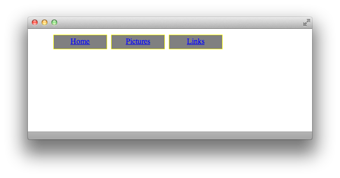

Ordered Lists
In the previous lesson, we learned how to use CSS to apply the box model and position our elements. Our first introduction to CSS showed how to style basic site elements. This lesson will focus especially on lists and links, and how to get them to do some crazy and/or useful things.
Hopefully you remember the basic list structure, where HTML that looks like this:
<ol> <li>Put your right hand in</li> <li>Put your right hand out</li> <li>Put your right hand in</li> <li>Shake it all about</li> </ol>
produces web page output that looks like this:
1. Put your right hand in 2. Put your right hand out 3. Put your right hand in 4. Shake it all about
We already know how to change the color or font of the text, and how to position it on the page, and how to give it width, but we can also use CSS to have fun with the numbers, since they’re generated automatically. So, assuming you’ve created a full HTML page with the code above, let’s start a stylesheet to mess around with the ol tag. As always, begin with the tag and curly brackets. The property that determines what kind of numbering system you use is list-style-type, and there are a couple of self-explanatory values that it can take. For example:
ol {
list-style-type: upper-roman;
}
turns your list into:
I. Put your right hand in II. Put your right hand out III. Put your right hand in IV. Shake it all about
The default style is decimal (1, 2, 3). Then there are upper-roman (I, II, III) and lower-roman (i, ii, iii), and upper-alpha (A, B, C) and lower-alpha (a, b, c). That one line of CSS, though, is all it takes to style what kind of list numbering system displays on the page. That’s not all you can do with lists, though. Read on!
Unordered Lists
Just as you can change the color, border, and font of regular paragraph and header text on a web page, you can also change these properties for your lists. This has led web designers to use unordered lists as the foundation for navigation menus on their pages. Let’s create one now. In your HTML document, create an unordered list where each <li> only contains a link (remember, the <a href=""> business). Oh fine, here’s an example:
<ul> <li><a href="home.html">Home</a></li> <li><a href="pics.html">Pictures</a></li> <li><a href="links.html">Links</a></li> </ul>
Now, open your stylesheet file in your text editor. As with ordered lists, we can style the bullet that appears before each list item. The code is similar:
ul {
list-style-type: circle;
}
The circle value produces the familiar bullet that we’re all familiar with. You can also choose disc for a circle outline, square for a solid square, or none for no marking. There’s alsoa separate property that lets you use your own image as the bullet. Instead of using the list-style-type property, you can use list-style-image instead. The value has to include the name of the image, in the format shown below, and be sure that if you don’t include a full URL that the image is in the same directory on your server as your stylesheet.
ul { list-style-image: url('triangle.gif'); }
But as we’re making a menu and not a list of things, let’s choose none for now. If you save your stylesheet and HTML page, and load the HTML in web browser, it’ll look like three normal links on three lines. Using the CSS you already know to change background colors, fonts, and sizes, apply some formatting rules to the li tag in your stylesheet, which will determine how each link displays. For example, I used the following CSS to make my three-link menu from before look like the image below:
ul {
list-style-type: none;
}
li {
color: yellow;
background-color: gray;
border: 1px solid yellow;
width: 100px;
height: 20px;
padding: 4px;
margin: 4px;
text-align: center;
float: left;
}

You may be wondering, even though the text color is declared to be yellow, why is it still blue? That is going to be answered in the next section, so hang on. You may also wonder how I got the menu to be horizontal rather than vertical. That comes from the float: left; CSS. Recall from lesson five that declaring float properties cause elements to wrap around other elements on the page, rather than displaying each on their own line. Telling each <li> to float left means that they’ll try to stay on the same horizontal line, each one as far to the left of the page as they can go without bumping into the previous one. To make this menu vertical, just delete the float: left; line.
Cascades
The C in CSS stands for Cascading, which is a fancy way of saying that you can have CSS code that overrides earlier code. One example of this is why the links in the above picture are blue instead of yellow. The quick and dirty explanation is that all browsers have internal CSS that define links to be blue. Since the text inside each menu item is itself within an <a> tag, and we have not defined what we want our links to look like yet, the browser’s CSS for blue links overrides my CSS for yellow list items.
So the quick fix is to add some CSS of our own, declaring links to be yellow. However, all of the links on our page will then be yellow. And truthfully, nobody wants that. How can we make it so that just the links in our menu are yellow? We double up our tags outside of the curly braces, that’s how. See the following example:
li a {
color: yellow;
}
The order is very important. li a means “a tags nested inside of li tags,” like <li> <a href=""></a> </li>. So, if you add the above code into the stylesheet from before, you get the following result:
Magnificent! This trick can be used in all sorts of ways, like if you only want links within your <h1> tags to look special, you would use h1 a { } in your CSS, and so on.
Links
Now that we’ve learned how to double up tags for one style declaration, we can move on to pseudo-classes, which are separate instances of the same style tag. The biggest use of pseudo-classes is the link rollover effect. For example, a link might be blue on a page, but when you move your cursor over it, it turns red, even before you click. That’s CSS at work. There are pseudo-classes for different states of elements, such as when your mouse hovers over them, when you click on them, or when you’ve already clicked on them.
To define a pseudo-class, add a colon and the pseudo-class’ name to the tag where it applies. For example, to define how a link should appear when the viewer hovers their cursor over it, you use a:hover { }. Below is an example where normal links are blue, hovering links are green, active links (links that are currently being clicked on) are red, and visited links (links the user has already seen) are purple.
a { color: blue; }
a:hover { color: green; }
a:active { color: red; }
a:visited { color: purple; }
Naturally, you don’t have to stop at colors. All normal CSS can be used in pseudo-classes. You could even have the font completely change when the user hovers over a link, or the width of the li expand when a user hovers over it (which would go inside li:hover). What if you want to define the hover behavior for links within a list item? As we already know, you can double up on tags to achieve this, so the logical next step is just to add the pseudo-class to the second tag. The answer, then, is li a:hover { }.
Now you’re really rocking in CSS! The method of using unordered lists to create navigation menus is used by paid professionals, and now you can also style them to look the way you want. Not to forget, you already know the CSS to layout a page with floats, widths, heights, padding and margins. Also, you have the skills to define colors and fonts. Get excited—this lesson is now over and there are only two more after it.
Key Concepts
- Ordered Lists can use a variety of numbering methods, as defined by the
list-style-typeproperty. - Unordered Lists also have different styles of bullets, as defined by the
list-style-typeandlist-style-imageproperties, but you can also set the style type tononein order to set up a navigation menu. - You can double up tags in a CSS declaration to make the style apply to specifically-nested HTML elements.
- Pseudo-classes are used to style a tag at different stages of user interaction, such as hovering over an element or clicking on an element. They are coded by simply adding a colon and the pseudo-class to the end of a tag in a stylesheet.
Homework
I have included an HTML file with this lesson’s materials download called “homework6.html”. For your assignment, write a stylesheet called “styles6.css” so that when you open the HTML file in your browser, it looks like the screenshot below and follows these behaviors:
- The link in the text paragraph should turn red when hovered over
- Links in the menu should turn black when hovered over
- The link in the text paragraph should also turn black when it has already been visited
Again, you do not need to modify the HTML at all; just create the stylesheet. Remember to double up on tags to create different behaviors for similar elements. For example, if you want li’s to be different in each type of list, try putting their list type’s tag (either ol or ul) before the li in your stylesheet. Also, if you want your horizontal break to fit all the way across the screen, you will have to tell it to clear: both; in your stylesheet. (See Floats in lesson five for more details.) When you’re done, compare your CSS file to the one in the Answers folder.